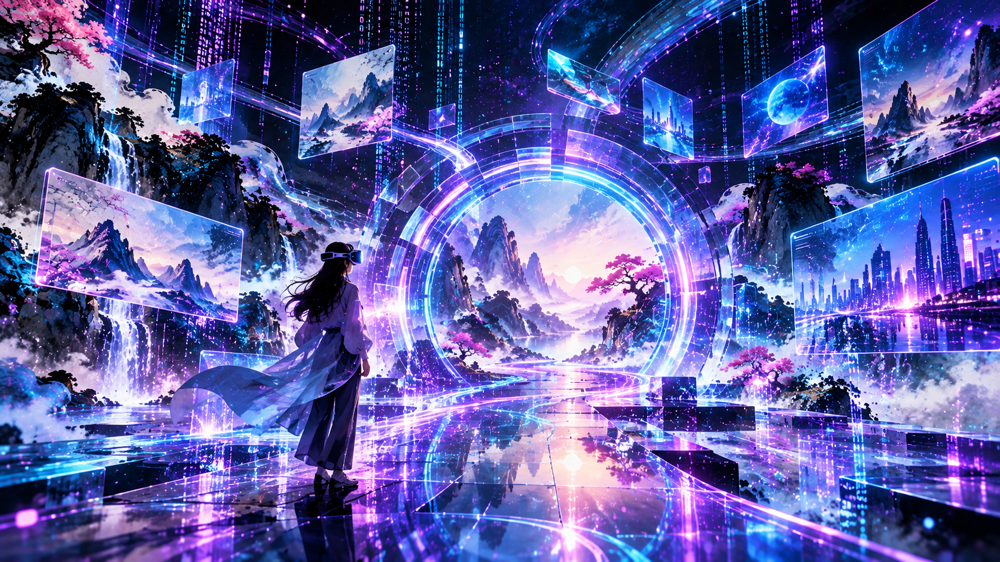
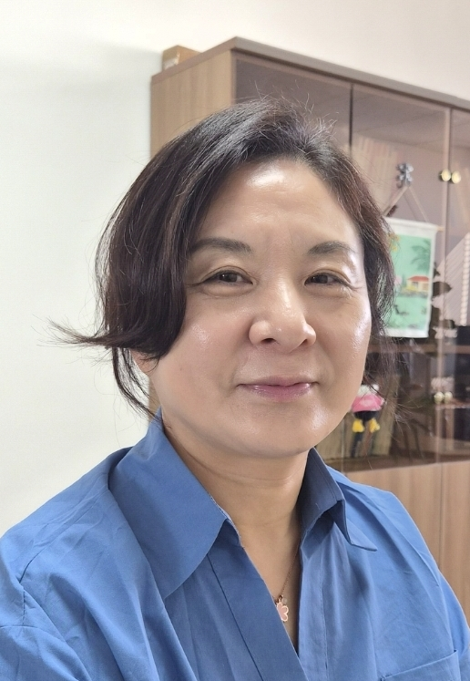

지능형 인터랙티브 미디어 연구실의 비전과 지도교수를 소개합니다.

지능형 인터랙티브 미디어 연구실(IIML)은 인공지능 기술과 인간-컴퓨터 상호작용(HCI)을 결합하여 차세대 디지털 미디어 및 사용자 중심 상호작용 시스템을 연구합니다. 멀티모달 상호작용, 가상/증강현실(VR/AR), 반응형 시스템을 바탕으로 창의적 콘텐츠 제작과 인터랙티브 소프트웨어 기술을 개발합니다.

호남대학교 컴퓨터공학과 교수 / IIML 지도교수
Research Interests:
HCI, UI/UX, AI Generative Media, Non-Photorealistic Rendering (NPR)
지능형 인터랙티브 미디어 연구실은 기술과 사람을 연결하는 따뜻하고 혁신적인 연구를 지향합니다. 인공지능과 인터랙티브 미디어를 통해 새로운 디지털 경험을 창출해 나갈 열정적인 학생들을 환영합니다.